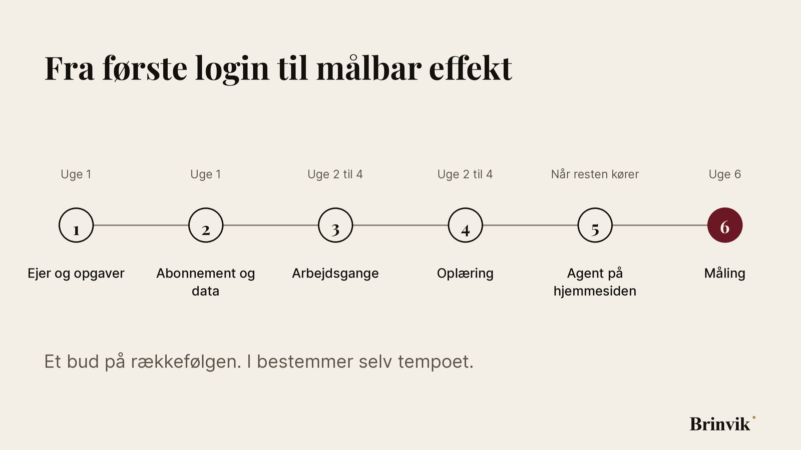
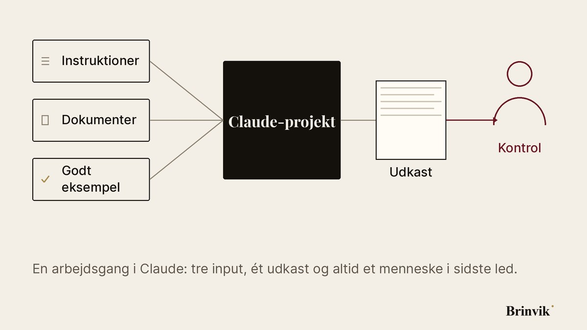
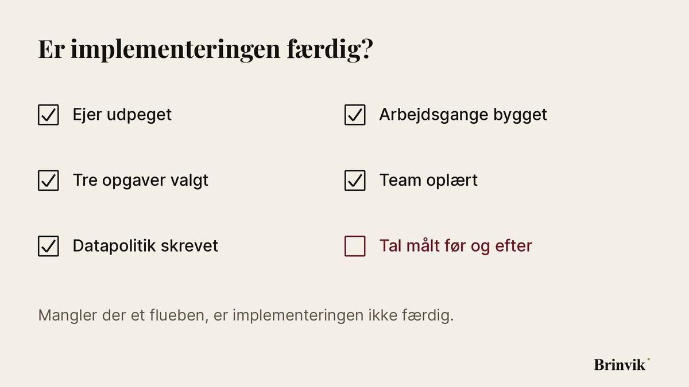

AI-implementering med Claude: en åben playbook for virksomheder
De fleste virksomheder starter med Claude på samme måde. Nogen opretter en konto, et par kolleger prøver det, og tre måneder senere ved ingen, om det har gjort en forskel. Denne playbook er de seks trin, der gør et forsøg til fast drift. Den er skrevet til virksomheder på 5 til 80 ansatte og er gratis at bruge og dele.
Hvad er en AI-implementering, og hvorfor går den ofte i stå?
En AI-implementering er det arbejde, der gør en AI-model til en fast del af hverdagen: valg af værktøj, regler for data, opsætning, oplæring og opfølgning. Den går i stå, når man behandler den som et indkøb og ikke som en ny måde at arbejde på.
Tre ting går typisk galt. Ingen har ansvaret, så projektet løber ud i sandet. Ingen har valgt, hvilke opgaver Claude skal løse, så alle prøver lidt af hvert. Og ingen målte noget før start, så ingen kan vise effekten bagefter.
Trin 1: Hvem har ansvaret, og hvilke opgaver starter I med?
Udpeg én person, der har ansvaret for resultatet. Ikke en komité. Vælg derefter tre opgaver, der tager meget tid, gentager sig hver uge, og hvor et forkert svar bliver opdaget, før det gør skade. Gode kandidater er mødereferater, første udkast til tilbud, opsummering af kundehenvendelser og oprydning i CRM-data.
Dårlige første kandidater er opgaver, hvor en fejl går direkte til en kunde uden kontrol, eller hvor ingen kan sige, hvad et godt resultat er.
Trin 2: Hvilket Claude-abonnement, og hvordan holder I data sikre?
Vælg et virksomhedsabonnement, ikke personlige konti. Claude Team giver fælles administration, single sign-on (SSO) og en databehandleraftale. Enterprise kommer på tale, når I har brug for automatisk oprettelse og lukning af brugere (SCIM), auditlogs eller særlige kontraktvilkår.
Skriv en kort datapolitik på én side, før nogen går i gang. Den skal svare på tre spørgsmål:
- Hvilke data må gerne deles med Claude, for eksempel interne noter og offentligt materiale?
- Hvilke data må aldrig deles, for eksempel CPR-numre, helbredsdata og kundedata uden behandlingsgrundlag?
- Hvem spørger man, når man er i tvivl?
Det er den slags dokument, en auditor spørger efter ved en ISO 27001-audit, og som Datatilsynet kan bede om. Det hjælper også med kravet om AI-færdigheder i EU's AI-forordning, som har gældt siden februar 2025. Og på én side bliver det faktisk læst.
Trin 3: Hvordan sætter I Claude op til de første arbejdsgange?
Byg hver arbejdsgang som et lille værktøj med sit eget navn. I Claude betyder det et projekt med faste instruktioner, de dokumenter, opgaven kræver, og et eksempel på et godt resultat. Et projekt til mødereferater ved, hvordan jeres referater ser ud. Et projekt til tilbud kender jeres priser og vilkår.

Når en arbejdsgang skal hente data fra CRM, mail eller kalender, kobles Claude på via connectors (integrationer). På Team og Enterprise er det en administrator med rollen Owner, der slår dem til, og som kan begrænse en connector til kun at læse. Start med læseadgang. Giv først skriveadgang, når arbejdsgangen har kørt fejlfrit i nogle uger.
Trin 4: Hvordan lærer medarbejderne at bruge Claude i hverdagen?
Oplæring virker, når den foregår på medarbejdernes egne opgaver. En workshop med generiske eksempler er glemt inden fredag. En workshop, hvor hver deltager går derfra med sin egen færdige arbejdsgang, er i brug allerede mandag.
Tre vaner gør den største forskel: Giv Claude konteksten i stedet for at regne med, at den gætter. Bed om et udkast og ikke et facit. Og læs altid resultatet igennem, før det sendes videre.
Trin 5: Hvornår giver det mening med en AI-agent på hjemmesiden?
En agent på hjemmesiden er næste skridt, når de interne arbejdsgange kører. Den svarer besøgende, stiller de spørgsmål, en sælger ville stille, og booker de rigtige møder direkte i kalenderen. Den skal være ærlig om, hvem den ikke kan hjælpe, og sende dem videre i stedet for at presse dem til et møde.
Byg den ikke, før I ved, hvad en god kunde er. En agent forstærker den måde, I vurderer kundeemner på. Er den uklar, bliver agenten også uklar.
Trin 6: Hvordan måler I, om implementeringen virker?
Mål tre tal før start og igen i uge 6: hvor lang tid hver af de tre opgaver tager, hvor mange fejl kontrollen fanger, og hvor mange i teamet der bruger arbejdsgangen hver uge. Falder brugen efter tre uger, er arbejdsgangen sandsynligvis for besværlig. Ret den, før I bygger den næste.

Skal I gøre det selv eller have hjælp?
Mange kan nå langt selv med denne playbook. Har I ikke tid til at stå for projektet internt, eller vil I have arbejdsgangene bygget og testet på jeres egne data? Så kan I få AI-implementering med Claude fra Brinvik. Omfanget er fast, og priserne er offentlige.
Ofte stillede spørgsmål
Hvor lang tid tager en AI-implementering med Claude?
Opsætning og oplæring tager få dage. Det, der tager tid, er at vælge de rigtige opgaver og teste dem på rigtige data. Mål effekten i uge 6, så I har tal at tage stilling til.
Må I bruge Claude under GDPR?
Ja, når opsætningen er i orden, men ansvaret ligger hos jer som dataansvarlig. Brug et virksomhedsabonnement, hvor Anthropics databehandleraftale indgår i de kommercielle vilkår. På virksomhedsabonnementer bruger Anthropic som standard ikke jeres data til at træne sine modeller. Feedback, som en bruger giver med tommel op eller ned, kan dog blive brugt, og en administrator med rollen Owner kan slå den mulighed fra. Beslut skriftligt, hvilke data der må deles, og fjern persondata, som opgaven ikke kræver.
Hvilket Claude-abonnement skal I vælge?
Til et team er Claude Team det naturlige udgangspunkt. Abonnementet har fælles administration, single sign-on (SSO) og en databehandleraftale. Enterprise giver mening, når I skal bruge automatisk oprettelse og lukning af brugere (SCIM), auditlogs eller særlige kontraktvilkår. Gratis- og personlige abonnementer hører ikke hjemme i virksomhedsdrift.
Hvordan måler I, om AI-implementeringen virker?
Mål, hvor lang tid opgaven tager før og efter, hvor mange fejl kontrollen fanger, og hvor mange i teamet der bruger arbejdsgangen hver uge. Mål tallene, før I starter, ellers er der intet at sammenligne med.